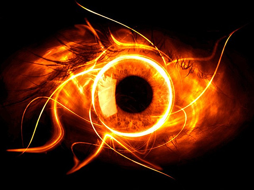

The man walked along the dirt road, holding the hand of the elder child in his left hand, and holding the hand of the younger child in his right. The sun was setting, birds were chirping to high heaven, and the cool wind blew in the direction of the walking family, erupting a large shriek of joy from the children as their hair blew in the direction of the wind, while the man shivered in response, for the undying heat of the strings snuffs in the bitter cold. If the man was out in the cold wind long enough, the flame of the strings would have gone out, freeing the man from the clammy grasps of the strings. But that didn’t happen, and what did happen was merely the ramification of the denial of the cold. They walked on, the dirt road slowly metamorphosing into a smooth paved one. The wind grew stronger, and the trees and the grass, bent under its rule, for they know their place in the world and the futile attempt of rebellion is hopeless. The fire burned, and the heart of the man cracked and shuddered beneath it, shriveling and shriveling until it could shrivel no more until all that was left of it was an uncanny pecan. The man felt his heart shrink, and it pained him for it to do so, for he had loved his heart, as it was the toll that secured his wife and created his children. But that love was no longer there. How can a man love a pecan? The mirth of the children grew louder as the man got closer to his destination and as the laughter grew louder, the fire burned faster, and the strings began crawling to the man’s legs. The laughter got louder, and as the family took a sharp right, they arrived. It was a nice home, larger and more sublime than theirs. The windows were larger, the door browner, the handles brighter, the backyard had more flowers, and it smelled nicer, for their house smelled of children and men, while this one smelled of fresh plants and perfumes. The children gazed in awe at this habituation and were no less than ecstatic to go inside. They wanted to touch the piano sitting in the living room, they wanted to gloss their fingers over the marble tables. They wanted to pick and smell the daisies, the roses, and the poppies in the backyard. It was everything they wanted to have, and they hugged the man whom they called father, thanking him for taking them to this place, that they would cherish this moment forever and ever. But all of these compliments, remarks, and teasing all went past the man, for all he felt was a deep, deep sense of shame. A shame so deep, so profound that the man began coughing and gagging all the while seeing nothing but as a slate of bright red, with heat flying up to his head, and the flames crawling on his legs faster than ever. The man felt his feet light ablaze and the pain emitted throughout the body in nice, smooth ripples. Then he saw it, an unending light, a bright star, brighter than all the others, a star with the shade of dark red. An endless red light, drowning out the white, for red is the first, always first, and because of that, it must take center stage.
The man opened his eyes and found that his children were gone. A peal of soft laughter was heard from the brown door, and a deeper more masculine laughter followed it. The man approached the brown door, lifted the gargoyle knocker, and prepared to let it drop, but at the last moment, hesitated, for his human senses came back for a split second. He realized that the people of the manor must have left him out for a good reason and that his children are happier with the hosts than with him. What can a man like him give them? The people can do better, all he was a man, while they were kings, lords, even. No let them be happy, and not be disturbed by the image of their pitiful father. Did he even deserve such a title? Let them run from the ruined home, let them run from the sorrow that binds them. Let them be at peace and not be troubled. For they are only children. He then walked away with his head down. He listened to the music of Thanjario, and when he heard it, his legs took the man away. The man didn’t want it, but the strings did and red must always comes first.
He approached the music of the composer, walking ever so slowly. The red light in the sky shone high, guiding the man to his second destination. Any worries of possible ramifications were erased from the man’s mind and all that was left was a burning desire to hear, and to play what he could, to follow the flame and merge with it. The words of his wife perished within the flame and he forgot everything, His life, his love, and his dignity. The strings began to move faster, and along with the strings, followed the man, sprinting faster than he had ever in his short life. The music grew louder and louder, and the man’s apprehension grew larger and larger. Then finally, he saw him. Thanjario, with his grey hair with a slight bald spot, his green suit and blue ribbon, and the sharp, acute movements of his fingers as he led a throng of players of all sports, all of them producing sharp, precise noises that can easily be processed, appreciated and understood. The sounds, oh the sweet sounds how it attracted the man. Listening, always listening, but never acting. Never putting in any effort. No, the music was fuel, it was the wood for the strings, but the strings did not know what to do with such power, as they had no master. The strings were unpredictable, volatile, and immortal, unending, inactive. It didn’t need the man, but the man needed it. It depended on it, it was it’s lord, it’s king and savior. It was his idol. It didn’t need anyone, but it liked other people needing it. The man needed a purpose, a fuel, a battery for himself. But he was unaware that the strings were controlling him, the strings leeched off of him. His search for purpose, his futile search, needed fuel. But that fuel controlled him, drove him mad, and the red light glares.
